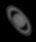
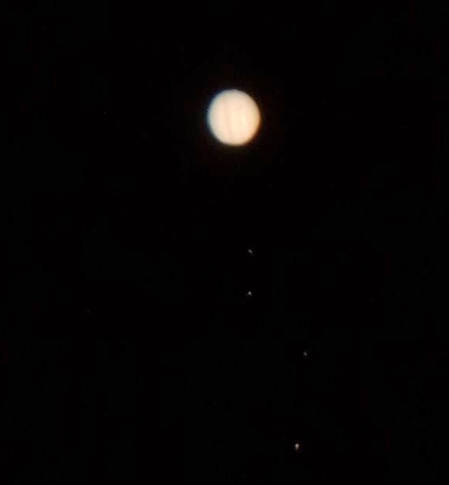
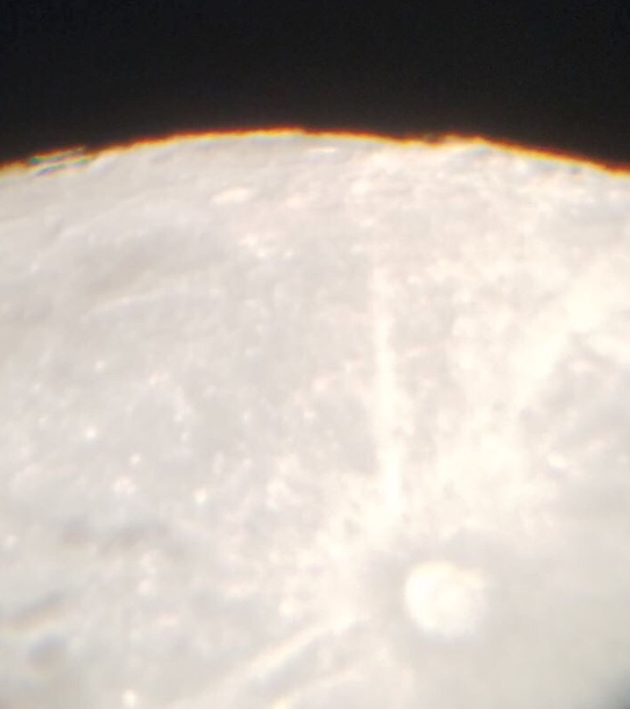

Rather surprisingly, I have never really done much actual astronomy in terms of observing the sky. That is, until recently when I had the opportunity to attend an observation night at Peyton Hall. Here are a couple of pictures using a 12” Schmidt-Cassegrain telescope. These pictures aren’t great, but I hope to get more into this hobby in the future!
  